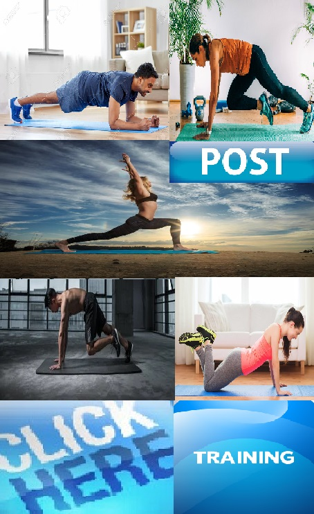
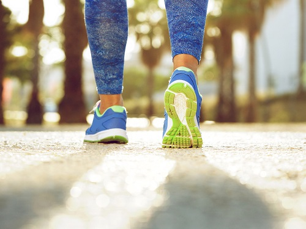

Effective Useful Training Exercises that everyone can do
Experts offer their favorite moves for making the most of your workout time.
Experts and sport athletes say there is no magic to exercise: You get out of it what you put in. That doesn't mean you have to work out for hours each day. It just means you need to work smart.
Some exercises are simply more efficient than others, whether they target multiple body muscles, some are suitable to train concrete parts of the body, others for a wide variety of fitness levels, or help you burn calories to lose the weight more effectively.
So here (below) we will post about what the best exercises are? We will share a list of favorite training types with great videos that convey training tips on a guiding way. With simple advices also that everyone can be able to practice or try.
You don’t need a ton of equipment, fancy machines, or crazy new moves to build a workout. In fact, some of the most basic exercises are still some of the best exercises that we will come back to later.
It’s a total-body move that uses your body as the equipment and works your chest, arms, shoulders, stomack and even your core.
Every good fitness center routine will use moves like that as building blocks. You can then add other, tougher variations of a few moves or throw in some fancy equipment to get a little variety. But, mastering the fundamentals is key to seeing gains in progression being better either outdoors, home or at the fitness gym.
WALKING - JOGGING

Any exercise program should include cardiovascular exercise, which strengthens the heart and burns calories. And walking is something you can do anywhere, anytime, with no equipment other than a good pair of shoes. It's not just for beginners, either: Even the very fit can get a good workout from walking. Doing a brisk walk can burn up to 500 calories per hour. Since it takes 3,500 calories to lose a pound, you could expect to lose a pound for every seven hours you walk, if you did nothing else. For example moving from to at least 30 minutes per session in fresh air outdoor either around a neighborhood, may it be in the park or nature trip. The walks can also be up to 1 hour or adding more longer kilometers, also depending on the person and your own shape where you are at. It's better to lengthen your walks longer before boosting your speed or incline can be a routine.
INTERVAL TRAINING
Whether you're a beginner or experienced, or a walker, adding interval training to your cardio workout will boost your fitness level and help you lose weight, to get the most out of your exercise time. Great guidance videos (lessons below) about how to get intensivity interval sessions and variation of excercises to see what the workouts look like. Sprints and jogging (ex.) will improve the endurance for interval-based workouts. To push the intensity or pace for minutes to the outmost, practise will do champion. Varying your pace throughout the exercise sessions stimulate the aerobic system to adapt. The more power an aerobic system has, the more capacity you have to burn calories (Set a plan routine weekly as objective for how much you want to train. Depending on how long your total workouts will be, and how much time you need to recover).
Lunges
Lunges work all the major muscles of the lower body: gluteals, quadriceps, and hamstrings. A lunge is a great exercise because it mimics life, it mimics walking, only exaggerated. Lunges can be a bit more advanced than squats, helping to improve your balance as well as shown in videos (below).
Here's how to do them right: Take a big step forward, keeping your spine in a neutral position. Bend your front knee to approximately 90 degrees, focusing on keeping weight on the back toes and dropping the knee of your back leg toward the floor. You can imagine sitting on your back foot. The trailing leg is the one you need to sit down on,as shown in the following video lessons. To make a lunge even more functional, try stepping not just forward, but back and out to each side. And the better lungs prepare you for the various positions you'll move in during the course of a day, the more useful exercises are.
-
Effective Training Exercises to Stay Fit can include:
Walking, especially at a quick pace
Running
Biking
Rowing
Swimming
Cycling
Group fitness classes
Push-ups
If done correctly, the push-ups can strengthen the chest, shoulders, triceps, and even the core trunk muscles, all at one time. Anytime you have the pelvis and the core [abdominals and back] in a suspended position, you have to rely on your own adherent strength to stabilize you. Push-ups can be done at any level of fitness. For someone who is at a more beginning level, start by pushing from the kitchen-counter height. Then work your way to a desk, a chair, the floor with bent knees, and, finally, the floor on your toes.
Here's how to do a perfect push-up: From a face-down position, place your hands slightly wider than shoulder-width apart. Place your toes or knees on the floor, and try to create a perfect diagonal with your body, from the shoulders to the knees or feet. Keep the glutes [rear-end muscles] and abdominals engaged. Then lower and lift your body by bending and straightening your elbows, keeping your torso stable throughout.
Abdominal Crunches
Who doesn't want firm, flat abs? Experts say that when done correctly, the familiar crunch (along with its variations) is a good choice to target them. For a standard crunch, begin lying on your back with feet flat on the floor and fingertips supporting your head. Press your low back down and begin the exercise by contracting abdominals and peeling first your head (tucking your chin slightly), then your neck, shoulders, and upper back off the floor. Be careful not to pull your neck forward by sticking the chin out; don't hold your breath, and keep elbows out of your line of vision to keep chest and shoulders open. One can do crunches with their feet off the floor and knees bent. With feet kept on the floor, many people tend to arch the back and engage the hip flexors. Crunches can be excellent, but if they're not done correctly, with the back arching, they can actually weaken the abdominals. To work the obliques (the muscles on the sides of your waist), take the standard crunch and rotate the spine toward one side as you curl off the floor. Twist before you come up It's really important that the twist comes first because then it's the obliques that are actually getting you up. But keep in mind that you won't get a flat stomach with crunches alone. Burning belly fat requires the well-known formula: using up more calories than you take in. Crunches work the ab muscles; [they're] not to be mistaken as exercise that burns the fat over the abdominals.
-
Crunches (Part 2)